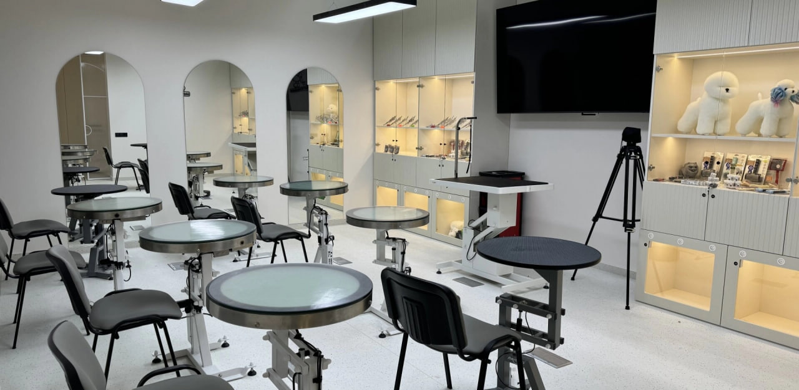

MOVEMENT MANIFESTO
Die Movement Academy ist nicht nur eine Grooming-Schule. Es ist eine Bewegung, die an der Schnittstelle von Ästhetik, Technologie und tiefem Respekt vor der Natur der Tiere entstanden ist. Wir haben diesen Raum in Frankfurt am Main mit einem Ziel gegründet: neue Standards in einer Branche zu setzen, in der Handwerkskunst an architektonische Planung grenzt.
Unser Ansatz basiert auf drei Säulen: Innovation, Evidenzbasierung und kompromisslose Qualität. Wir glauben, dass jede Bewegung des Werkzeugs bewusst sein muss und jeder Besuch eines Tieres im Salon stressfrei verlaufen sollte. Deshalb setzen wir auf modernste Ausstattung und lehren Methoden, die erst bis 2030 zum weltweiten Standard werden.
Wir bilden keine Handwerker aus. Wir bilden Marktführer aus, die den Wert ihrer eigenen Marke verstehen und in der Lage sind, Service auf höchstem Niveau zu bieten. Movement ist ein Umfeld für diejenigen, die keine Angst haben, die Ersten zu sein, die bereit sind, Stereotypen zu brechen und eine Karriere im europäischen Kontext aufzubauen.
Heute ist unsere Akademie ein Wissens-Hub, in dem erfahrene Mentoren die Geheimnisse der Meisterschaft an eine neue Generation von Groomern weitergeben. Willkommen in der Bewegung. Willkommen in der Zukunft.
